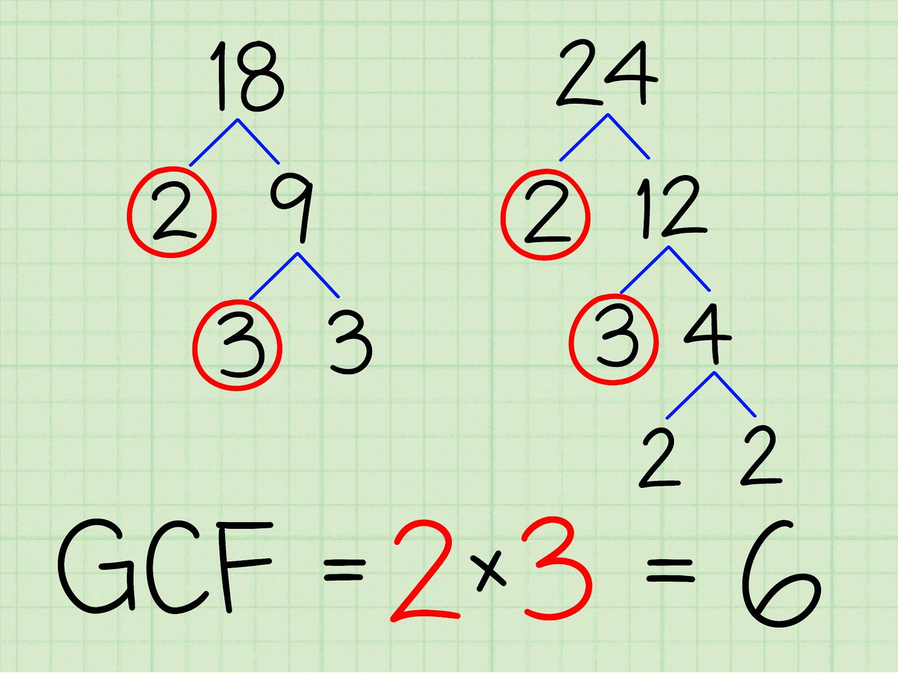

Greatest Common Factor (GCF) and Least common Multiple (LCM) script
Output is a dictionary with prime numbers as keys and their exponents as values.
# import devisors() function from the previous post from collections import Counter def greatest_common_factor(n1, n2): counter1 = devisors(n1) counter2 = devisors(n2) result = Counter() for prime in counter1.keys(): power = min(counter1[prime], counter2[prime]) if power > 0: result[prime] = power if len(result) == 0: result[1] = 1 return result def least_common_multiple(n1, n2): counter1 = devisors(n1) counter2 = devisors(n2) for prime in counter2.keys(): counter1[prime] = max(counter1[prime], counter2[prime]) return counter1 def get_product(counter): if len(counter) == 0: return 0 prod = 1 for prime, power in counter.items(): prod *= prime ** power return prod get_product(greatest_common_factor(18, 24)) get_product(least_common_multiple(18, 24))